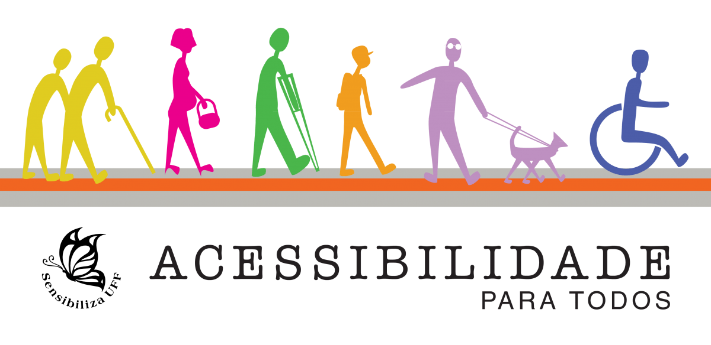
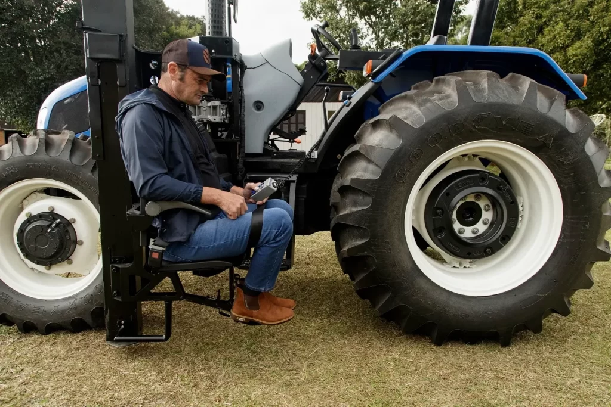

Desenho Ilustrativo
.jpeg)
Alguns dos principais simbolos referentes a acessibilidade

Homem com um aparato tecnologico que torna acessivel o uso de um trator
Desenho Ilustrativo
Alguns dos principais simbolos referentes a acessibilidade
Homem com um aparato tecnologico que torna acessivel o uso de um trator
Veja Mais
Segurança alimentar: Aumento da produção de alimentos de forma mais eficiente e sustentável, contribuindo para garantir o abastecimento da população. Preservação do meio ambiente: Redução do uso de agrotóxicos e práticas agrícolas mais sustentáveis, contribuindo para a preservação dos recursos naturais. Geração de emprego e renda: A modernização da agricultura gera novas oportunidades de emprego e impulsiona a economia rural. Inclusão social: A democratização do acesso às tecnologias contribui para a inclusão social, reduzindo as desigualdades entre os agricultores. Desenvolvimento sustentável: A agricultura de precisão contribui para um desenvolvimento mais sustentável, conciliando a produção de alimentos com a preservação do meio ambiente.
Custo: O alto custo de equipamentos e softwares especializados pode limitar o acesso de pequenos e médios produtores. Conectividade: A falta de infraestrutura de comunicação em áreas ruais dificulta a utilização de tecnologias que dependem de internet. Capacitação: A complexidade das novas tecnologias exige que os agricultores tenham acesso a treinamento e capacitação adequados, o que pode ser um desafio em regiões mais isoladas. Adaptação cultural: A resistência à mudança e a dificuldade em adaptar as práticas tradicionais às novas tecnologias podem retardar o processo de adoção. Linguagem: A interface dos softwares e aplicativos muitas vezes é complexa e em idiomas que não são dominados por todos os agricultores.
Benefícios:
Desafios:


A acessibilidade às novas tecnologias do campo é um desafio que precisa ser superado para garantir um futuro mais sustentável e inclusivo para a agricultura. Ao investir em capacitação, infraestrutura e políticas públicas que promovam a igualdade, podemos construir um setor agrícola mais forte e resiliente, beneficiando tanto os agricultores quanto a sociedade como um todo.
A acessibilidade das novas tecnologias no campo é fundamental para garantir um futuro mais justo, sustentável e próspero para todos. Ao investir em capacitação, infraestrutura e políticas públicas que promovam a igualdade, podemos construir um setor agrícola mais forte e resiliente, beneficiando tanto os agricultores quanto a sociedade como um todo.